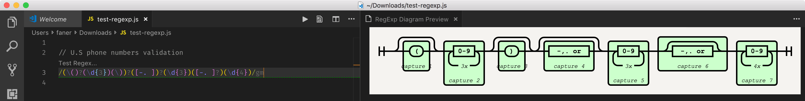
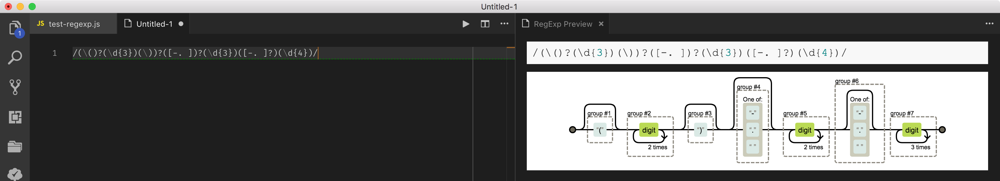
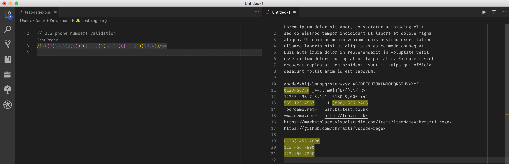

Linux Regular Expression
Linux 命令行下使用正则表达式 —— Regular Expression。
A regular expression, regex or regexp (sometimes called a rational expression) is, in theoretical computer science and formal language theory, a sequence of characters that define a search pattern. Usually this pattern is then used by string searching algorithms for "find" or "find and replace" operations on strings, or for input validation.
The concept arose in the 1950s when the American mathematician Stephen Cole Kleene formalized the description of a regular language. The concept came into common use with Unix text-processing utilities.
Since the 1980s, different syntaxes for writing regular expressions exist, one being the POSIX standard and another, widely used, being the Perl syntax.
Regular-Expressions.info - The Premier website about Regular Expressions
references#
正则表达式参考手册 - PCRE表达式全集@wiki
正则表达式快速参考
正则表达式30分钟入门教程
第 19 单元：正则表达式
MSDN .NET 正则表达式 快速参考
perlre#
RegExp#
w3: en / zh
MDN: en / zh
liaoxuefeng / ruanyifeng
Using Regular Expressions with JavaScript
The Little Guide for Regular Expressions in JS
String.match(regexp)：返回 RegExpMatchArray；String.search(regexp)：返回 number 类型，第一个满足条件的匹配结果在整个字符串中的位置或 -1。String.replace(searchValue, replaceValue)：替换源 searchValue 支持 RegExp 表达式；-
String.split(regexp)：按照正则规则分割字符串，返回一个由分割后的各个部分组成的子串数组（string[]）； -
RegExp.test(string)：测试字符串是否匹配模式； RegExp.exec(string)：返回 RegExpMatchArray；
expression#
有两种书写正则表达式的方式：
- Literal Expression:
let re = /pattern/flags; - Class RegExp: let re =
new RegExp('pattern', 'flags');
- Use the literal expression when the regular expression is going to be constant, because this way offers the immediate compilation of the regular expression when the script is loaded.
- Use the RegExp constructor when the regular expressions is going to change or maybe the user is going to determinate the pattern.
flags#
/g enables "global" matching.
Is for global search. Meaning it’ll match all occurrences, not just the first.
When using the replace() method, specify this modifier to replace all matches, rather than only the first one.
/i makes the regex match case insensitive.
/m enables "multi-line mode", for multi-line searching.
In this mode, the caret and dollar match before and after newlines in the subject string.
y: call Sticky, matches only from the index indicated by the lastIndex property of this regular expression. (not standard yet).
注意：/m 多行匹配，将会影响 ^ 和 $。
python#
re - Support for regular expressions (RE).
The sequence
is equivalent to
常用 API 如下：
re.search(pattern, string, flags=0): 扫描整个字符串并返回 第一个 成功的匹配。
re.match(pattern, string, flags=0): 尝试从字符串的起始位置匹配一个模式，如果不是起始位置匹配成功的话就返回 None。
re.fullmatch(pattern, string, flags=0): 匹配整个字符串。
re.split(pattern, string, maxsplit=0, flags=0): 按照能够匹配的子串将字符串分割后返回列表。
re.findall(pattern, string, flags=0): 在字符串中找到正则表达式所匹配的所有子串，并返回一个列表，如果没有找到匹配的，则返回空列表。
注意： match 和 search 是匹配 一次，findall 则是匹配 所有。
flags 可为 re.M, re.I, re.S。
standards#
BRE#
基本的正则表达式（Basic Regular Expressions），又叫 Basic RegEx，简称 BRE。
ERE#
扩展的正则表达式（Extended Regular Expressions），又叫 Extended RegEx，简称 ERE。
BRE and ERE work together.
BRE requires that the metacharacters ( ) and { } be designated \(\) and \{\}, whereas Extended Regular Syntax (ERE) does not.
ERE adds ?, +, and |, and it removes the need to escape the metacharacters ( ) and { }, which are required in BRE.
Perl and PCRE#
https://pcre.org/
Perl 的正则表达式（Perl Regular Expressions），又叫 Perl RegEx，简称 PRE。
Perl 兼容格式的正则表达式（Perl Compatible Regular Expressions），简称 PCRE。
PCRE is a library written in C, which implements a regular expression engine, inspired by the capabilities of the Perl programming language. Philip Hazel started writing PCRE in summer 1997. PCRE's syntax is much more powerful and flexible than either of the POSIX regular expression flavors and than that of many other regular-expression libraries.
Because of its expressive power and (relative) ease of reading, many other utilities and programming languages have adopted syntax similar to Perl's—for example, Java, JavaScript, Python, Ruby, Qt, Microsoft's .NET Framework, and XML Schema.
A number of prominent open-source programs, such as the Apache and Nginx HTTP Servers, and the PHP and R scripting languages, incorporate the PCRE library; proprietary software can do likewise, as the library is BSD licensed.
Perl 5.10 implements syntactic extensions originally developed in PCRE and Python.
regex online#
cheatsheet#
Regular expressions in Perl
Tables of Perl Regular Expression (PRX) Metacharacters
| Character classes | |
|---|---|
| . | any character except newline |
| \w \d \s | word, digit, whitespace |
| \W \D \S | not word, digit, whitespace |
| [abc] | any of a, b, or c |
| [^abc] | not a, b, or c |
| [a-g] | character between a & g |
| Anchors | |
| ^abc$ | start / end of the string |
| \b \B | word, not-word boundary |
| Escaped characters | |
| \. \* \\ | escaped special characters |
| \t \n \r | tab, linefeed, carriage return |
| Groups & Lookaround | |
| (abc) | capture group |
| \1 | backreference to group #1 |
| (?:abc) | non-capturing group |
| (?=abc) | positive lookahead |
| (?!abc) | negative lookahead |
| Quantifiers & Alternation | |
| a* a+ a? | 0 or more, 1 or more, 0 or 1 |
| a{5} a{2,} | exactly five, two or more |
| a{1,3} | between one & three |
| a+? a{2,}? | match as few as possible |
| ab|cd | match ab or cd |
(?:re) 类似 (…)，匹配部分区块，但是不捕获存储为组。
例1: industr(?:y|ies)：非捕获匹配 industry|industries。
例2：/(?:^)\d{4}/m 顶格匹配以四个数字开头的行。
常用限定符#
| 代码/语法 | 说明 |
|---|---|
| ? | 重复0次或1次 |
| + | 重复1次或多次 |
| * | 重复0次或多次 |
| {n} | 重复n次 |
| {n,} | 重复n次或更多次 |
| {n,m} | 重复n到m次 |
+ is equivalent to {1,}
常用元字符#
| 代码 | 说明 |
|---|---|
| . | 匹配除 换行符 以外的任意字符 |
| \w | 匹配 字母 或 数字 或 下划线（word） |
| \s | 匹配任意的 空白符（space） |
| \d | 匹配 数字（digit） |
| \b | 匹配单词的 开始 或 结束（word boundary） |
| ^ | 匹配字符串的 开始 |
| $ | 匹配字符串的 结束 |
To match any character including newline, use a pattern such as [.\n].
Python 中对应 flag 为
re.S。
常用反义词#
| 代码/语法 | 说明 |
|---|---|
| \W | 匹配任意 不是 字母，数字，下划线，汉字的字符 |
| \S | 匹配任意 不是 空白符的字符 |
| \D | 匹配任意 非 数字的字符 |
| \B | 匹配 不是 单词开头或结束的位置 |
| [^x] | 匹配除了 x 以外的任意字符 |
| [^aeiou] | 匹配除了 aeiou 这几个字母以外的任意字符 |
vscode extensions#
vscode 1.29.0 基于 ripgrep 实现支持 multiline search。
vscode 默认是 search.useRipgrep（Deprecated），建议采用 search.usePCRE2，支持 lookaround 和 backreferences 等特性。
Regex Railroad Diagrams#
Display railroad diagram of regex under cursor.
A regular expression railroad diagram view for regular expression under cursor. This is inspired by regex railroad diagrams.
光标定位到 js 文件中的正则表达式（RegExp）所在行，再在控制面板中执行 Show RegExp preview 命令，将在右侧新开辅助编辑器显示 RegExp Diagram Preview。

最新版 vscode 中不可用！
RegExp Preview and Editor#
VSCode extension based on regexper-static. Including regexp expression preivewer and realtime preivew editor.
在控制面板中执行 RegExp Editor，将打开左侧编辑器，可在其输入正则表达式，右侧的 RegExp Preview 将展开其匹配分解逻辑图。

最新版 vscode 中不可用，考虑安装 Lulus Young 或 LouisWT 适配的新版本！
Regex Previewer#
Regex matches previewer for JavaScript, TypeScript, PHP and Haxe in Visual Studio Code.
新建一个 js 文件，该插件会自动检测其中的正则表达式，并在其上浮现 Test Regex... 提示条。
点击或在控制面板中执行 Toggle Regex Preview In Side-By-Side Editors 命令将在右侧开启测试编辑器。
在测试编辑器中输入测试字符串，再将光标移动到 js 中的正则表达式所在行，右侧将高亮匹配的文本。

/g标志匹配所有行，未加则只匹配第一行。
Filter Line#
- By Input String
- By Input Regex
- By Not Contain Input String
- By Not Match Input Regex
- By Config File
config#
必须在当前文件所在根目录（即 vscode 打开的文件夹）下创建过滤配置文件。
- 如果打开的是独立文件，不是以文件夹打开，则提示
Can not locate workspace folder for current file； - 如果是以文件夹（
~/folder）打开文件（~/folder/subfolder/test.log），执行Filter Line By Config File，则提示Can not locate config file ~/folder/.vscode/filterline.json。
Config file format type
There are 3 format types. As they are so simple, I will not describe them here. Please visit the demo directly :
stringlist: String list json or eomlregexlist: Regular expressions list json or eomlgeneral: This is default if type is not specified. json or eoml